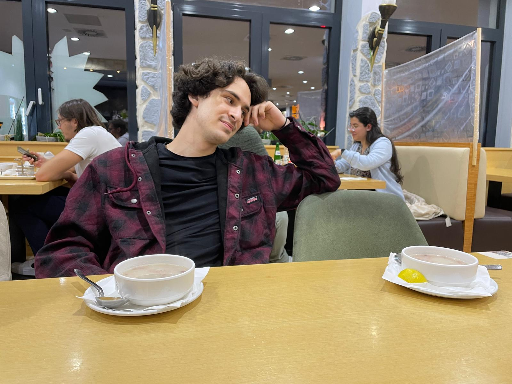
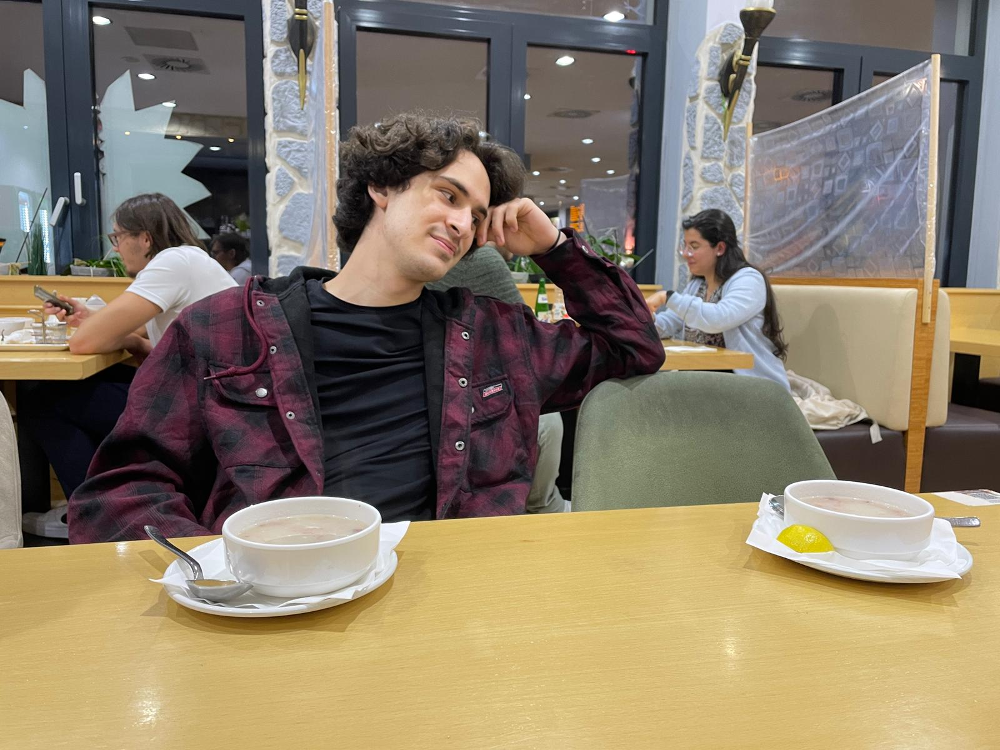
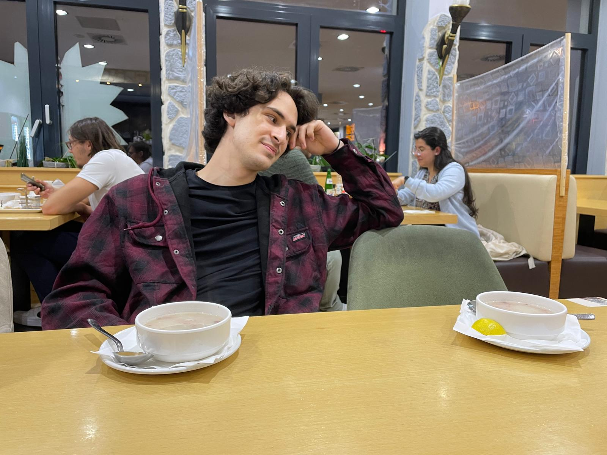

Photo Album


 



Bu fotoğrafların fazlası gelicek :) Yanyana olunca daha güzellerini çekicezz.
Hey güzellik, bugün doğum günün 🥳.
İyi ki doğdun sevgilim, iyi ki varsın, iyi ki benimlesin 🥰. 19. yaşın inşallah öncekilerden iyi olsun, inşallah mutlu olayların peş peşe geldiği bir sene olsun senin için. Büyüüüüük bi kısmını benim yanımda geçireceğin bi sene olsun inşallah 🙃.
Seni o kadar çok seviyorum ki, hayatımın her anında hissediyorum seni kalbimde. Sabah kalktığımda yanıbaşımdasın sanki, alarmımı kapatırken günaydın diyosun bana. Yatarken kollarıma alıyorum seni saçlarını okşayarak uyuyorum. Bana hissettirdiklerini tahmin bile edemezsin, çünkü ben bile şaşırıyorum kendime nasıl bu kadar aşık olabilirim diye ☺️.
Seni yanımda hayal ediyorum bi yere giderken. Parkta yürürken elimi tutuyorsun, kuş cıvıltılarını beraber dinliyoruz. Göl kenarında sarılırken ördekler gelip rahatsız ediyor bizi 🙄. Heheh. Ama seninle her şey güzel sevgilim, ve ben bunları hayal ederken bile kalbim inanılmaz bir hızda atıyo, senin yanında hissediceğim duyguların haddi hesabı olmicak galiba 🥺.
Sanatçı sevgilim benimm ❤️. Bayılıyorum yaptığın şeylere, o kadar yeteneklisin ki elinden çıkan her şey, dokunduğun her eser mükemmel oluyo resmen. Doğum günüme yaptığın tabloya bayılmıştım 🥺, şimdi yine aklıma geldi gördüğüm ilk an... Gözlerim yaşla doldu çünkü o kadar güzeldi ki ğŸ˜. (Umarım sen de benim yeteneklerimi kullanarak hazırladığım şeyleri beğenirsin ☺️.)
Bitanem, bayılıyorum, bitiyorum sana. Yüzüne, burnuna, gözlerine... o bal dudaklarına 😋. O dudaklardan öpmek, güzel ellerinden tutmak ve güvenli kollarına sarılmak istiyorum. İnşallah hepsi en kısa sürede olucak. Vücuduna da bayılıyorum. Mükemmeliyetin tanımısın resmen, gözlerim kamaşıyo sana baktığımda, kalbim tutuluyor, ruhum huzur buluyor 😇...
Artık yavaş yavaş sona getirmem lazım galiba bu yazıyı. Seni çok seviyorum sevgilim ❤️. İnşallah öncekilerden de güzel günler bekliyor olucak bizi, inşallah hiç olmadığımız kadar mutlu olucaz bundan sonra, beraber... O kadar çok istiyorum ki ömrümü seninle geçirmeyi... Umarım bu doğum günün bir ömür kutlayacağım doğum günlerinin ilkidir.
Ben de küçük bir şiirle bitireyim madem. İngilizce ama olsun heheh.
Bewitched by the fire in your eyes
Locked in the castle 'tis your heart
Your soul I see when I look for the light
And by your side I want to be all night
You nurse me when I'm feeling sick
Talk to me when I'm feeling weak
Your skin is my healing lotion
Your kiss is the love potion
İyi ki doğdun sevgilim, seni çoooook seviyorum ❤️ 😘

Bu fotoğrafların fazlası gelicek :) Yanyana olunca daha güzellerini çekicezz.